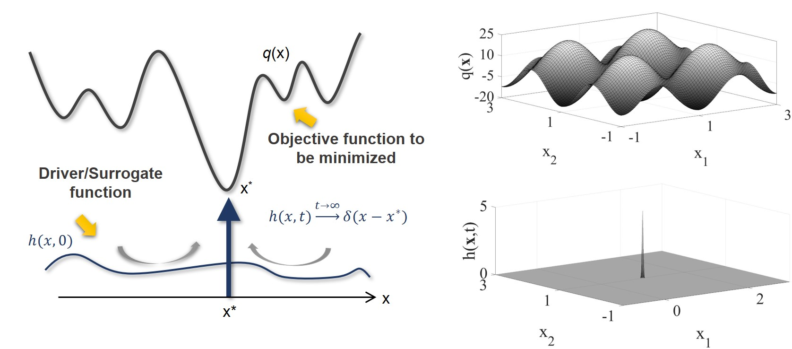
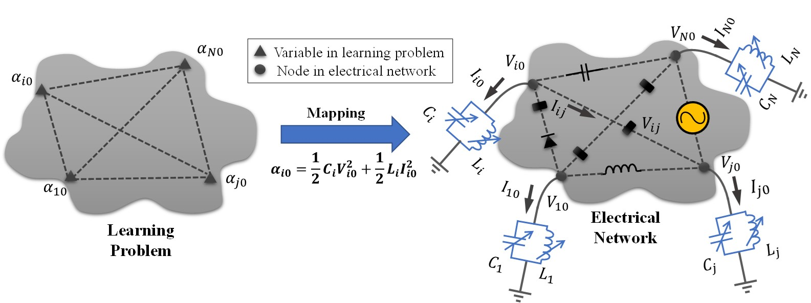
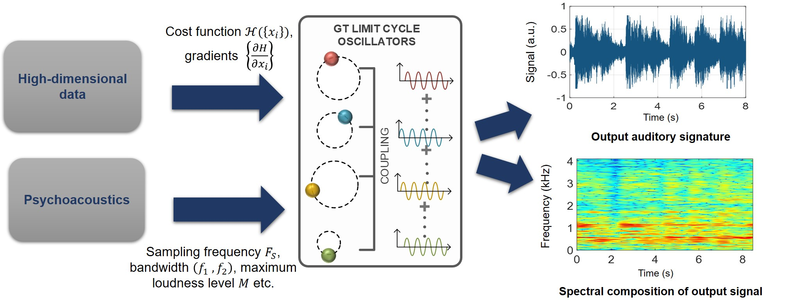

Graduate Thesis : Continuous-time and Complex Growth Transforms for Analog Computing and Optimization
Analog computing and optimization paradigms exploit massive parallelism to search an exponentially large parameter space and employ computational primitives inherent in the physics of the underlying devices to achieve very high energy-efficiency. This makes them promising and practical candidates for solving difficult computational problems involving algebraic and differential equations that are considered to be almost intractable using their digital counterparts. My thesis proposes a dynamical systems approach that exploits naturally occurring analog conservation constraints to solve for a variety of optimization and learning tasks. To this end, I propose a continuous-time, real and complex domain analog computing framework based on a special class of multiplicative update algorithms called growth transforms. This computational model naturally satisfies conservation constraints for reaching the minimum energy state with respect to a system-level cost function and is generic enough to be applied to different computing paradigms.
Decentralized Global Optimization

I have developed a continuous-time annealing algorithm for solving non-convex and discrete global optimization problems. The proposed method optimizes a target objective function by continuously evolving a driver functional over a conservation manifold. Additionally, a discrete variant of the model can be used for implementing decentralized optimization algorithms like winner-take-all and ranking. Future work in this direction involves investigating the connection between the proposed global optimization framework and the asymptotic behavior of the tunneling current seen in Fowler-Nordheim quantum-tunneling.
Resonant Machine Learning

The growth transform dynamical system model can be extended to the complex domain and can be used for designing energy-efficient resonant machine learning models. The proposed learning model reuses/conserves the network’s reactive energy while dissipating energy only during the process of learning and exploits the phenomenon of electrical resonance for storing and sustaining the learned network parameters.
Data Sonification

The emergent oscillatory dynamics generated by a complex-growth transform network can be used for data sonification to detect anomalies and novelties in high-dimensional data using spectrograms and human recognizable audio signatures.